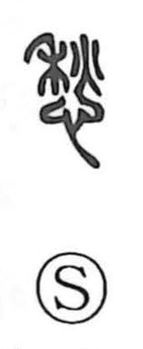

愁

Uncategorized
Kun: ureeru, urei | On: shuu
worry ・ melancholy ・ sorrow ・ anxiety
Explanation
愁 is a phono-semantic character: the “heart” element signals an inner feeling, while 秋 functions as the phonetic, giving the On reading shuu. The Shuowen glosses it as “to be anxious,” and it appears in compounds such as 憂愁, expressing melancholy and gloom. A related graph with the same phonetic, 愀, carries similar senses. That both use 秋 suggests more than sound alone—the autumn season’s quiet loneliness colors the word’s nuance of sorrow and anxious longing.